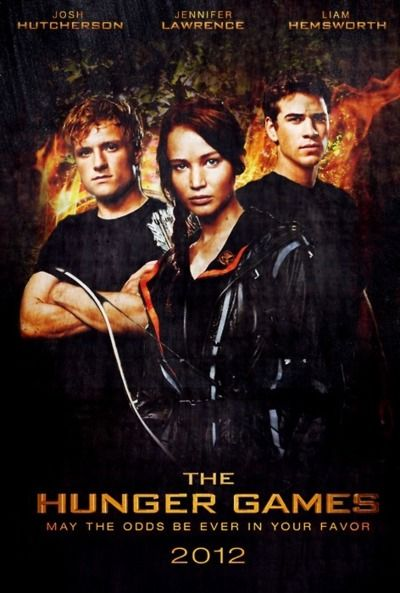

Hunger Games: What Is The Correct Order Of Movies And Where To Watch?
By Leonard Manson | 9th of October, 2021

Hunger Games: Children and youth dystopias dominated bookstore shelves in the late 2000s. The Maze Runner, Divergent and, of course, Hunger Games sagas rescued a type of literature that has always been very common, especially since the 1984 publication. authors decided to focus the stories on younger characters, who overnight had to assume responsibility, in an analogy to the passage from adolescence to adulthood.
It is no coincidence, by the way, that these sagas begin to hit stores after the completion of another franchise that is also directly related to dystopias: Harry Potter. Readers who followed and grew up with the wizard needed a new literature, less naive and that was closer to the changes they themselves were living, being the ideal time for these stories that talk about more adult themes.
And the first person who seized the moment and got away with it was writer Suzanne Collins, with the Hunger Games franchise. Over three books, the author addressed themes such as oppression, the consequences of wars, poverty and the resulting hunger. Collins has often commented that her inspiration, in addition to Greek mythology, was a mix of reality shows with war scenes she saw on television.

The saga has already surpassed 85 million books sold in over 35 countries, quickly becoming a best seller. And with that, it didn’t take long for the adaptation rights to be acquired by Lionsgate. If you’re interested in this type of story, but you still don’t know the saga, below we present the films in chronological order, so you can watch without getting lost.
In the distant future, Panem is what is left of the US after a devastating war, with a totalitarian regime that celebrates its birthday with an event known as the Hunger Games.
Each year, two youth ages 12-18 from each of Panem’s 12 districts are selected to participate in this deadly tradition, with the survivor being declared the winner. During the 74th edition, young Katniss Everdeen (Jennifer Lawrence) volunteers to save her younger sister and ends up starting a revolution against the fearsome and cruel president Coriolanus Snow (Donald Sutherland).